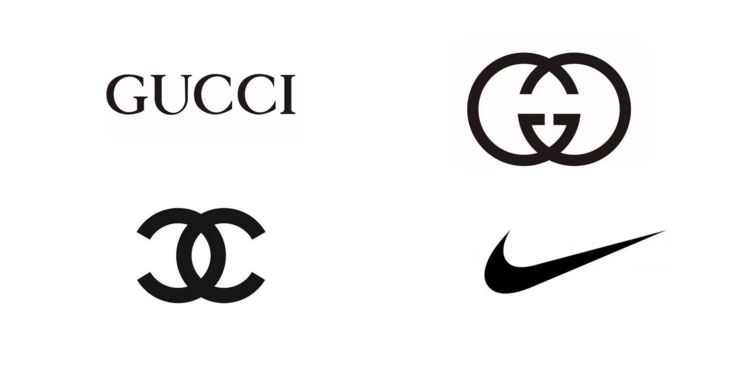
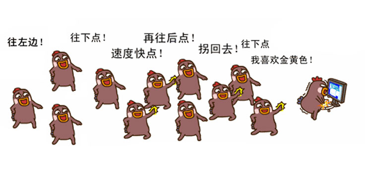

每个设计师都有许多不做设计的朋友，他们之间可以谈人生、可以谈理想、可以谈恋爱，甚至还可以弹棉花。但是！绝对不能弹logo，不信你试试，友谊的小船肯定是说翻就翻，而且设计师会抱着一种“翻了船老子也能一个人驾驶”的心态和你冷战到底的……因为这件事真的…没那么简单。
市面上还存在着很多logo，它们在很大程度上左右着人们的想法，让人们觉得做一个logo如果超过3分钟，那就证明这个设计师能力不行，比如下面这些：
但设计师可不是这么认为的，他们内心戏是这样的：设计作品代表着设计水平，我给你做个不够完善的 LOGO，你投入使用后被许多其他人看到，其中可能会有真正潜在的客户，如果他们看到我随便做的水平不高的作品，对我的设计生涯来讲影响极其恶劣blablabla……
设计分很多种，logo呀、海报呀、包装呀、页面呀，不同领域需要不同的手法，任何一个设计想要做好都不是简单的事。而且他们呢通常要面对经理、总监、大爆丝等各个层级的领导，很多时候他们身后是这样的：
设计师心里苦啊，千千万万个他们汇集在一起成立了一个组织——国际平面设计协会联合会。1995年组织决定将4月27日定为世界平面设计日，全世界的设计师都将在这一天举办各种活动庆祝自己的节日、宣传设计的意义和作用。2009年北京承办这几节日，中央美术学院这个培养设计师界的“抗把子”站出来承担了这个责任，在这一季活动时举办了名为“设计的社会责任”的海报展， 展出内容包括加拿大平面设计协会全球巡展的“设计关怀”展，以及中央美术学院学生创作的海报。表达中国新一代设计师积极面对社会问题，通过设计创造美好世界的愿望。
1、4月27日是世界平面设计师日，这一节日的目的是为了宣传设计的意义和作用；
2、继程序员族群之后，设计师族群也成为了一个需要保护的物种！